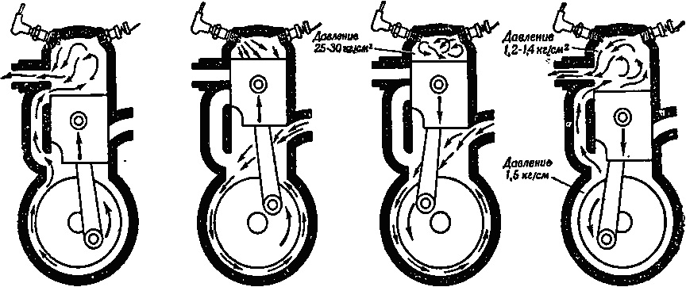

Четырёхтактный двигатель
Это двигатель, у которого весь рабочий цикл происходит за четыре хода поршня, за два оборота коленчатого вала
Схема четырёхтактного двигателя
Рабочий цикл четырёхтактного двигателя
1. Впуск
Поршень движется вниз, открывается впускной клапан, в цилиндр поступает топливо-воздушная смесь.
2. Сжатие
Клапаны закрыты, поршень движется вверх, смесь сжимается.
3. Рабочий ход
Происходит воспламенение смеси, поршень резко движется вниз.
4. Выпуск
Поршень поднимается, открывается выпускной клапан, выхлопные газы выходят.
Двухтактный двигатель
Это двигатель, у которого весь рабочий цикл происходит за два хода поршня, за один оборот коленчатого вала
Схема двухтактного двигателя
Цилиндр двухтактного двигателя имеет несколько окон: впускное, два перепускных и выпускное. Иногда бывает одно перепускное окно. Через впускное окно горючая смесь из карбюратора поступает в картер двигателя. Перепускные окна служат для перепуска горючей смеси из картера в цилиндр двигателя. А через выпускное окно отработавшие газы выходят наружу.
Рабочий цикл двухтактного двигателя
1. Рабочий ход, выпуск и продувка.
Предположим, что поршень находится в верхней мертвой точке.Смесь при этом сжата. Горючая смесь у двухтактного двигателя поступает в нижнюю часть двигателя – картер и заполняет его. В это время впускное окно открыто. Поршень, идя от нижней мертвой точки к верхней, уходит от картера. В картере давление падает – образуется разрежение. Сжатая в цилиндре над поршнем смесь воспламеняется. Поршень идет вниз. Отойдя на некоторое расстояние от в. м. т., он открывает выпускное окно. Отработавшие газы немедленно устремляются наружу. Начинается процесс очистки цилиндра. Двигаясь вниз, поршень оказывает давление на горючую смесь, находящуюся в картере. Давление в картере повышается. Поршень открывает перепускные окна, смесь из картера по перепускным каналам быстро двигается в верхнюю часть цилиндра и заполняет его. Но в цилиндре еще много отработавших газов. Свежая смесь направляется в камеру сгорания и выталкивает оттуда оставшиеся продукты горения (происходит продувка свежей смесью). Цилиндр окончательно очищается. Вот поршень пришел в нижнюю мертвую точку. За один ход совершилось три процесса: рабочий ход, выпуск и впуск.
2. Впуск + сжатие
Коленчатый вал продолжает вращаться. Поршень идет вверх. Сначала он открывает впускное окно. В картере снова образуется разрежение, и он начинает заполняться горючей смесью. Поршень закрывает перепускные и выпускные окна. Смесь снова сжата. Снова появляется искра, и цикл повторяется.